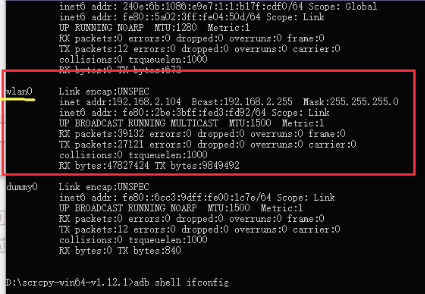

scrcpy
Scrcpy application provides display and control of Android devices connected on USB (or over TCP/IP). It does not require any root access. It works on GNU/Linux, Windows and macOS.
scrcpy 是一个开源项目, github地址https://github.com/Genymobile/scrcpy
20200302源码v1.12.1.tar.gz
20200302项目镜像scrcpy-master.zip
首次使用过程及遇到的相关问题
1.到github上下载相应平台的二进制版本文件, scrcpy-win64-v1.12.1.zip
2.解压文件
3.从cmd中进入解压后的目录下
4.在手机中打开"开发者选项", 开启"开启开发者选项", 开启"usb调试", 关于usb调试的能开的都打开
5.用usb线连接手机和电脑
6.此时手机应弹出 usb调试授权弹窗 , 问题在此处遇到, 手机没有弹出 usb调试授权弹窗
7.在电脑上在软件所在路径下用如下命令查看手机usb调试是否连接上
adb devices
结果如下:
没有发现任何android设备
原因是驱动没有安装好
在"设备管理器"中查看设备驱动是否安装好, usb调试需要如下图的设备驱动

在"Android Phone"这项下应该还有一个手机专有的设备驱动
下载"驱动精灵"安装后扫描并修复, 这次遇到了驱动路径异常, 让软件修复, 然后让软件下载并安装手机的驱动
把连接手机和电脑的线拔下来重新插一下
手机弹出 usb调试授权弹窗 若没有弹出则再用
adb devices
查看一下, 手机就应该弹出 usb调试授权弹窗
8.同意并记住
若是手机一直插着使用则直接运行
scrcpy
即可直接使用, 若要用wifi连接使用要确保手机和电脑在同一局域网下即同一wifi下
9.设置adb调试程序网络监听端口, 即运行如下命令
adb tcpip 5555
10.拔掉手机线若不拔掉则会导致在连接时报错并提示有多个设备因而无法正常启动
11.连接手机
因为连接时需要指定手机的ip地址, 可以先用如下命令查看手机ip地址
adb shell ifconfig

上图的例子中192.168.2.104便是手机的ip地址
运行如下命令连接手机(假设手机的ip地址是 192.168.1.101, 使用时将手机的地址替换192.168.1.101即可)
adb connect 192.168.1.101:5555
12.运行
scrcpy
----------------------------------------------------------------------------------------------------
操作时鼠标右键是手机的返回键
ctrl+f是全屏切换快捷键
ctrl+r是屏幕横竖切换快捷键
ctrl+h是手机home键的快捷键同按鼠标中键
ctrl+b是手机返回键的快捷键同按鼠标右键
ctrl+p是手机电源键的快捷键
ctrl+o是手机屏幕开关切换快捷键(即只在电脑端显示手机关闭屏幕和电脑手机同步镜像显示之间切换)
ctrl+c复制手机剪切版到电脑剪切版
ctrl+shift+v复制电脑剪切版到手机剪切版
ctrl+v将电脑剪切版中的内容作为一串文本按键事件序列发送给手机(可以理解为将剪切版中的文字模拟成一连串的键盘按键发送给手机, 例如剪切版的内容为123则相当于用键盘按了三次按键分别为123)
若是遇到电脑上显示全黑可以按ESC键
在电脑中的中文输入法不能直接输入到手机中, 但是可以在电脑中将中文文本编辑好后复制到电脑的剪切版中在按ctrl+shift+v将电脑剪切版的内容按文本格式传输给手机并覆盖手机的剪切版, 然后在手机中要输入内容的地方按住鼠标左键几秒钟然后松开, 手机弹出粘贴按钮, 选粘贴即可
往手机里传文件可以借助电脑版微信, 或网页服务
----------------------------------------------------------------------------------------------------
某些手机软件禁止截屏, 可以用此软件投屏到电脑上然后用电脑的截屏功能进行截屏